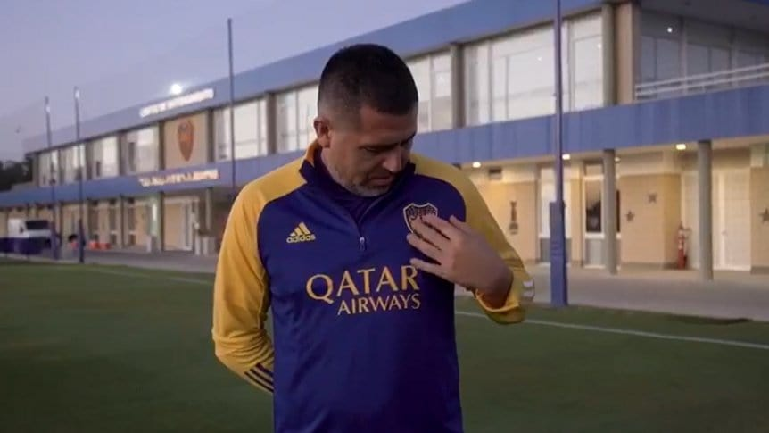

El vicepresidente de Boca salió a bancar a Hugo Ibarra
Juan Román Riquelme: "Confiamos en el director técnico que tenemos"
Juan Román Riquelme, vicepresidente de Boca Juniors, dijo este jueves que mantiene la confianza en la gestión como entrenador de Hugo Ibarra, tras la práctica del plantel en donde el DT paró un equipo con cuatro cambios para jugar ante Platense.
"Lo veo bien a Ibarra. Está contento, esta es su casa y disfruta de estar acá. Confiamos en el técnico que tenemos y estamos muy contentos con el plantel, recién van tres fechas", señaló el jefe del Consejo de Fútbol boquense en rueda de prensa.
"Queremos mejorar y sabemos que es un torneo largo. El año pasado fuimos el mejor equipo, ganamos los dos campeonatos, y ahora confiamos en dar pelea", sostuvo el ídolo "xeneize", quien decidió hablar en forma imprevista con los medios presentes en el predio de Ezeiza, igual que hizo el técnico tras el entrenamiento del miércoles.
En cuanto al futuro del DT, Riquelme expresó: "Ojalá Hugo sea técnico 20 años en Boca y ojalá yo pueda quedarme 20 años, ésta es mi casa. Sé que los hinchas me van a ayudar a cuidar al club". Después se refirió al rendimiento del equipo, que hasta ahora consiguió 4 puntos en la Liga Profesional con una victoria un empate y una derrota, el dirigente dijo que "sabemos que cada partido que nosotros jugamos se analiza mucho más que el del resto. Cuando hay un problemita se analiza más que el del resto. Por suerte, el hincha lo tiene clarísimo".
"Ningún equipo del fútbol argentino juega lindo, pero van tres fechas y es lógico, se paró mucho tiempo. El año pasado tuvimos la suerte de ganar los dos torneos, el equipo compite. Lleva un parate importante como todo el fútbol argentino pero hay un plantel de hace tiempo y tenemos que tener un orden más claro. Queremos jugar mejor y no tengo dudas de que lo vamos a hacer", analizó.
El tema del nivel futbolístico llevó a Riquelme a extenderse en el análisis: "El fútbol me gusta, soy hincha de mi club. Nos tocó jugar con Racing, nos tocó jugar tres partidos de la Liga y pienso como jugador... Si a mí me costaba volver después de tres meses, hay que entender que hubo un parate muy raro por el tema del Mundial".
"El primer tiempo ante Central Córdoba en nuestro estadio lo hicimos bien, el segundo tiempo no. Contra Atlético Tucumán tuvimos minutos buenos y otros no. Miro todos los partidos, no hay partidos buenos, todo el fútbol argentino sufre el parate que hubo", añadió.
Después le preguntaron sobre el nivel del colombiano Sebastián Villa, quien fue expulsado por agredir a un jugador de Talleres de Córdoba. "Villa anda preocupado, es lógico, se lastimó la rodilla antes de finalizar el torneo pasado, paró dos meses, jugó poquitos minutos contra Gimnasia en La Plata y ante Independiente, y luego vino el parate del mundial. Lleva seis meses sin competir y es lógico que le va a costar agarrar ritmo", expresó.
También destacó la llegada el próximo domingo a la Bombonera de Martín Palermo como técnico de Platense, aunque ya lo hizo en otra ocasiones como DT de Godoy Cruz y de Aldosivi. "A Martín se lo recibirá como se merece. Es uno de los ídolos más grandes de Boca. Ojalá le vaya bien donde está, y que el domingo podamos ganar. Fui un afortunado de jugar con él y nos dio muchas alegrías, como jugador e hincha. El domingo disfrutará de volver a su casa", adelantó.
En cuanto a su (por ahora) postergado partido de despedida como jugador, Román dijo que quiere "jugar un partido más en la Bombonera", y que "de acá a mitad de año, en algún momento esperamos poder hacerlo y disfrutarlo con nuestros hinchas".
Finalmente, consultado sobre su posible candidatura a presidente de Boca para las elecciones de fin de año, respondió a lo Román: "¿Candidato a Presidente? No lo sé. Estoy agradecido porque me hicieron volver al club. Estamos cerca de alcanzar al Bayern Múnich con la mayor cantidad de socios, y esperamos en diciembre superar los 400.000 para cuidar a nuestro club. El que se enoja, pierde. No me voy a enojar nunca. Estoy en el club más grande del mundo, en mi casa y tengo la obligación de cuidar a nuestro club", cerró el último 10 xeneize.
